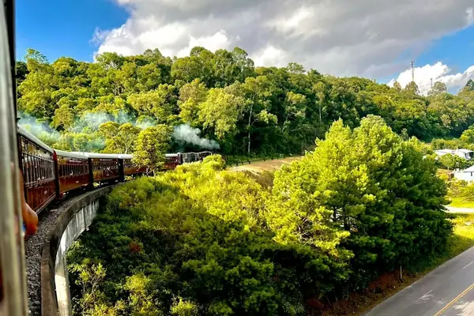

Home › Wine regions › Serra Gaúcha
Serra Gaúcha wine region

Photo: Jessica Leal on Unsplash
Brazil's main region, strong in sparkling.
From cool southern hills to tropical irrigated vineyards, with strong sparkling wines.
CountryBrazil
Key grapesMerlot, Chardonnay, Moscato
Notable producers in Serra Gaúcha
- Miolo
- Salton
- Casa Valduga
- Pizzato
- Aurora
Serra Gaúcha wines to try
Cave Geisse Brut
Serra Gaúcha · Pinto Bandeira · Chardonnay, Pinot Noir
Traditional-method Brazilian fizz: green apple, citrus and toasty brioche.
Food: Canapés, fried snacks, sushi
More wine regions in Brazil
See Serra Gaúcha on the wine map
Support The Wine Reference
This guide is free, with no paywall. If it helped you choose a bottle, you can buy me a glass and keep it growing.
🍷 Buy me a glass